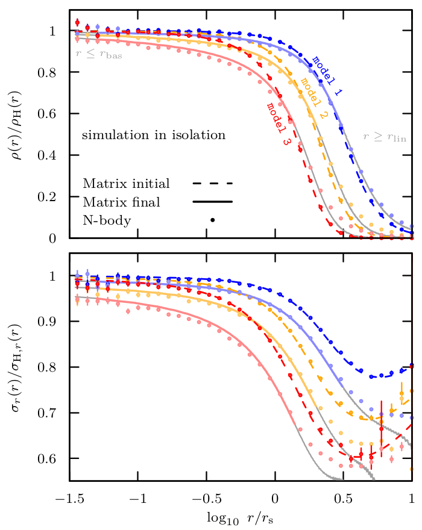
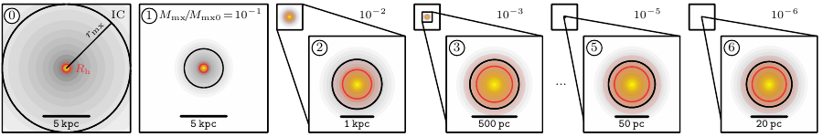
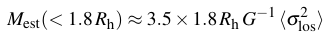

Collisionless relaxation from near equilibrium configurations: Linear theory and application to tidal stripping
S. Rozier & RE
S. Rozier & RE
|  |
Placed slightly out of dynamical equilibrium, an isolated stellar system quickly returns towards a steady virialized state. We study this process of collisionless relaxation using the matrix method of linear response theory. We show that the full phase space distribution of the final virialized state can be recovered directly from the disequilibrium initial conditions, without the need to compute the time evolution of the system. This shortcut allows us to determine the final virialized configuration with minimal computational effort. Complementing this result, we develop tools to model the system's full time evolution in the linear approximation. In particular, we show that moments of the velocity distribution can be efficiently computed using a generalized moment matrix. We apply our linear methods to study the relaxation of energy-truncated Hernquist spheres, mimicking the tidal stripping of a cuspy dark matter subhalo. Comparison of our linear predictions against controlled, isolated N-body simulations shows agreement at per cent level for the parts of the system where a linear response to the perturbation is expected. We find that relaxation generates a tangential velocity anisotropy in the intermediate regions, despite the initial disequilibrium state having isotropic kinematics. We further confirm that relaxation is responsible for depleting the amplitude of the density cusp, without affecting its asymptotic slope. Finally, we compare the linear theory against N-body simulation of tidal stripping on a radial orbit, confirming that the theory still accurately predicts density and velocity dispersion profiles for most of the system.
S. Rozier & R. Errani (2024): Collisionless relaxation from near equilibrium configurations: Linear theory and application to tidal stripping, arXiv:2402.03430 |
Micro galaxies in LCDM
RE, Rodrigo Ibata, Julio Navarro, Jorge Peñarrubia, Matt Walker
RE, Rodrigo Ibata, Julio Navarro, Jorge Peñarrubia, Matt Walker
A fundamental prediction of the Lambda Cold Dark Matter (LCDM) cosmology is the centrally divergent cuspy density profile of dark matter haloes. Density cusps render CDM haloes resilient to tides, and protect dwarf galaxies embedded in them from full tidal disruption. The hierarchical assembly history of the Milky Way may therefore give rise to a population of "micro galaxies"; i.e., heavily stripped remnants of early accreted satellites, which may reach arbitrarily low luminosity. Assuming that the progenitor systems are dark matter dominated, we use an empirical formalism for tidal stripping to predict the evolution of the luminosity, size, and velocity dispersion of such remnants, tracing their tidal evolution across multiple orders of magnitude in mass and size. The evolutionary tracks depend sensitively on the progenitor distribution of stellar binding energies. We explore three cases that likely bracket most realistic models of dwarf galaxies: one where the energy distribution of the most tightly bound stars follows that of the dark matter, and two where stars are defined by either an exponential density or surface brightness profile. The tidal evolution in the size-velocity dispersion plane is quite similar for these three models, although their remnants may differ widely in luminosity. Micro galaxies are therefore best distinguished from globular clusters by the presence of dark matter; either directly, by measuring their velocity dispersion, or indirectly, by examining their tidal resilience. Our work highlights the need for further theoretical and observational constraints on the stellar energy distribution in dwarf galaxies.
RE, R. Ibata, J. F. Navarro, J. Peñarrubia, M. G. Walker (2024): Micro galaxies in LCDM, arXiv:2311.14798

RE, R. Ibata, J. F. Navarro, J. Peñarrubia, M. G. Walker (2024): Micro galaxies in LCDM, arXiv:2311.14798
Ursa Major III/UNIONS 1: the darkest galaxy ever discovered?
RE, Julio Navarro, Simon Smith, Alan McConnachie
RE, Julio Navarro, Simon Smith, Alan McConnachie
|
The recently-discovered stellar system Ursa Major III/UNIONS 1 (UMa3/U1) is the faintest known Milky Way satellite to date. With a stellar mass of 16±5 solar masses and a half-light radius of 3±1 pc, it is either the darkest galaxy ever discovered or the faintest self-gravitating star cluster known to orbit the Galaxy. Its line-of-sight velocity dispersion suggests the presence of dark matter, although current measurements are inconclusive because of the unknown contribution to the dispersion of potential binary stars. We use N-body simulations to show that, if self-gravitating, the system could not survive in the Milky Way tidal field for more than a single orbit (roughly 0.4 Gyr), which strongly suggests that the system is stabilized by the presence of large amounts of dark matter. If UMa3/U1 formed at the centre of a ~109 solar masses cuspy LCDM halo, its velocity dispersion would be predicted to be of order ~1 km/s. This is roughly consistent with the current estimate, which, neglecting binaries, places σlos in the range 1 to 4 km/s. Because of its dense cusp, such a halo should be able to survive the Milky Way tidal field, keeping UMa3/U1 relatively unscathed until the present time. This implies that UMa3/U1 is in all likelihood the faintest and densest dwarf galaxy satellite of the Milky Way, with important implications for alternative dark matter models, and for the minimum halo mass threshold for luminous galaxy formation in the LCDM cosmology.
RE, J. F. Navarro, Simon E.T. Smith, Alan W. McConnachie (2023): Ursa Major III/UNIONS 1: the darkest galaxy ever discovered? arXiv:2311.10134 • Open access link to published version [IOP website] • CMU press release mentioning this work [CMU website] • CFHT press release mentioning this work [CFHT website] |
Dark matter halo cores and the tidal survival of Milky Way satellites
RE, Julio Navarro, Jorge Peñarrubia, Benoit Famaey, Rodrigo Ibata
RE, Julio Navarro, Jorge Peñarrubia, Benoit Famaey, Rodrigo Ibata
The cuspy central density profiles of cold dark matter (CDM) haloes make them highly resilient
to disruption by tides. Self-interactions between dark matter particles, or the cycling of baryons
during galaxy formation, may result in the formation of a constant density core which would
make haloes more susceptible to tidal disruption. We use N-body simulations to study the
evolution of "cored" NFW-like subhaloes in the tidal field of a massive host, and identify the
criteria and timescales for full tidal disruption. Applying these results to the Milky Way (MW),
we find that the survival of MW satellites places interesting constraints on core formation.
Indeed, we find that no subhaloes with cores larger than 1 per cent of their initial NFW scale
radius can survive for a Hubble time on orbits with pericenters ≤10 kpc. A satellite like
Tucana 3, with pericentre ~3.5 kpc, must have a core size smaller than ~2 pc to survive just
three orbital periods on its current orbit. The core sizes expected in self-interacting dark matter
(SIDM) models with a cross section of 1 cm2/g, seem incompatible with ultra-faint satellites
with small pericentric radii, such as Tuc 3, Seg 1, Seg 2, Wil 1, as these would fully disrupt in
less than 10 Gyr after infall. These results suggest that many satellites have vanishingly small
core sizes, consistent with CDM cusps. The discovery of further Milky Way satellites on orbits
with small pericentric radii would strengthen these conclusions and allow for stricter upper
limits on the core sizes implied by the survival of Milky Way satellites.
RE, J. F. Navarro, J. Peñarrubia, et al. (2022): Dark matter halo cores and the tidal survival of Milky Way satellites, arXiv:2210.01131
• Open access link to published version [MNRAS website]
• Movie of the tidal evolution of a cuspy and a cored subhalo [this website]
RE, J. F. Navarro, J. Peñarrubia, et al. (2022): Dark matter halo cores and the tidal survival of Milky Way satellites, arXiv:2210.01131
• Open access link to published version [MNRAS website]
• Movie of the tidal evolution of a cuspy and a cored subhalo [this website]
C-19: Tidal debris of a dark matter-dominated globular cluster?
RE, Julio Navarro, Rodrigo Ibata, N. Martin, and friends from the Pristine collaboration
RE, Julio Navarro, Rodrigo Ibata, N. Martin, and friends from the Pristine collaboration
The recently discovered C-19 stellar stream is a collection of kinematically associated metal-poor stars in the halo of the Milky Way lacking an obvious progenitor. The stream spans an arc of 10 degrees on the sky, and orbit-fitting suggests an apocentric distance of ~20 kpc and a pericentre of ~10 kpc. The narrow metallicity dispersion of stars with available spectra, together with light element abundance variations, suggest a globular cluster (GC) origin. The observed metallicity ([Fe/H] = -3.4), however, is much lower than that of any known GC. In addition, the width and velocity dispersion of the stream are similar to those expected from disrupting dwarf galaxies, and substantially larger than the tidal debris of GCs able to disrupt on C-19's orbit. We propose here an unconventional model where the C-19 progenitor is a dark matter-dominated stellar system with GC-like abundance patterns. We use N-body simulations to show that the tidal disruption of a ~100 pc pc King-model stellar component embedded in a ~20 km/s cuspy cold dark matter halo yields debris consistent with C-19's observed width and velocity dispersion. The stellar component of the progenitor is fully disrupted, and is spread over two distinct streams; one corresponding to C-19 and another possibly hiding behind the Galactic plane. If such companion stream were found, it would suggest that dark matter-dominated dwarfs may also develop GC-like enrichment patterns, a finding that would inform our theoretical understanding of the formation of multiple populations in GCs and dwarf galaxies alike.
RE, J. F. Navarro, R. Ibata, N. Martin, et al: (2022): C-19: Tidal debris of a dark matter-dominated globular cluster?, arXiv:2203.02513
• Open access link to published version [MNRAS website]
• Movie of simulation [this website]
RE, J. F. Navarro, R. Ibata, N. Martin, et al: (2022): C-19: Tidal debris of a dark matter-dominated globular cluster?, arXiv:2203.02513
• Open access link to published version [MNRAS website]
• Movie of simulation [this website]
Structure and kinematics of tidally limited satellite galaxies in LCDM
RE, Julio Navarro, Rodrigo Ibata, Jorge Peñarrubia
RE, Julio Navarro, Rodrigo Ibata, Jorge Peñarrubia
|
Tides gradually peel off stars and dark matter from a cold dark matter subhalo, trimming it down according to their initial binding energy. This process strips preferentially particles with long orbital times, and comes to an end when the remaining bound particles have crossing times shorter than a fraction of the orbital time at pericentre. The properties of the final stellar remnant thus depend on the energy distribution of stars in the progenitor subhalo, which in turn depends on the initial density profile and radial segregation of the initial stellar component. The stellar component may actually be completely dispersed if its energy distribution does not extend all the way to the subhalo potential minimum, although a bound dark remnant may remain. These results imply that 'tidally-limited' galaxies, defined as systems whose stellar components have undergone substantial tidal mass loss, neither converge to a unique structure nor follow a single tidal track, as claimed in earlier work. On the other hand, tidally limited dwarfs do have characteristic sizes and velocity dispersions that trace directly the characteristic radius (rmax) and circular velocity (Vmax) of the subhalo remnant. This result places strong upper limits on the size of satellites whose unusually low velocity dispersions are often ascribed to tidal effects. In particular, the large size of kinematically-cold 'feeble giant' satellites like Crater 2 or Antlia 2 cannot be explained as due to tidal effects alone in the Lambda Cold Dark Matter scenario.
RE, J. F. Navarro, R. Ibata, J. Peñarrubia (2022): Structure and kinematics of tidally limited satellite galaxies in LCDM, arXiv:2111.05866 • Open access link to published version [MNRAS website] • Tidal evolution code (dSphs): [github link] [README] [documentation] |
Asymptotic tidal remnants of cold dark matter subhalos
RE & Julio Navarro
RE & Julio Navarro

|
Tidal mass losses reshape cold dark matter halos, leaving behind bound remnants whose characteristic densities are set by the mean density of the host at the pericentre of their respective orbit. The evolution to the final bound remnant state is essentially complete after ~5 orbits for nearly circular orbits, while reaching the same remnant requires ~25 and ~40 orbits for eccentric orbits with 1:5 and 1:20 pericentre-to-apocentre ratios, respectively. The density profile of tidal remnants is fully specified by the fraction of mass lost, and approaches an exponentially-truncated Navarro-Frenk-White profile in the case of heavy mass loss. Resolving tidal remnants requires excellent numerical resolution; poorly resolved subhalos have systematically lower characteristic densities and are more easily disrupted. Even simulations with excellent spatial and time resolution fail when the final remnant is resolved with fewer than 3000 particles. We derive a simple empirical model that describes the evolution of the mass and the density profile of the tidal remnant applicable to a wide range of orbital eccentricities and pericentric distances. Applied to the Milky Way, our results suggest that 108 - 1010 solar mass halos accreted ~10 Gyrs ago on 1:10 orbits with pericentric distance ~10 kpc should have been stripped to 0.1 - 1 per cent of their original mass. This implies that estimates of the survival and structure of such halos (the possible hosts of ultra-faint Milky Way satellites) based on direct cosmological simulations may be subject to substantial revision.
RE & Julio Navarro (2021): The asymptotic tidal remnants of cold dark matter subhalos paper: arXiv:2011.07077 • Open access link to published version [MNRAS website] • Tidal evolution code (CDM): [github link] [README] [documentation] • Movie illustrating tidal tracks [this website] |
Tidal stripping and survival of cold dark matter subhaloes
RE & Jorge Peñarrubia
RE & Jorge Peñarrubia
|
The clumpiness of dark matter on sub-kpc scales is highly sensitive to the tidal evolution and survival of subhaloes. In agreement with previous studies, we show that N-body realisations of cold dark matter subhaloes with centrally-divergent density cusps form artificial constant-density cores on the scale of the resolution limit of the simulation. These density cores drive the artificial tidal disruption of subhaloes. We run controlled simulations of the tidal evolution of a single subhalo where we repeatedly reconstruct the density cusp, preventing artificial disruption. This allows us to follow the evolution of the subhalo for arbitrarily large fractions of tidally stripped mass. Based on this numerical evidence in combination with simple dynamical arguments, we argue that cuspy dark matter subhaloes cannot be completely disrupted by smooth tidal fields. Modelling stars as collisionless tracers of the underlying potential, we furthermore study the tidal evolution of Milky Way dwarf spheroidal galaxies. Using a model of the Tucana III dwarf as an example, we show that tides can strip dwarf galaxies down to sub-solar luminosities. The remnant 'micro-galaxies' would appear as co-moving groups of metal-poor, low-mass stars of similar age, embedded in sub-kpc dark matter subhaloes.
RE & Jorge Peñarrubia (2020): Can tides disrupt cold dark matter subhaloes? paper: arXiv:1906.01642 • Open access link to published version [MNRAS website] • N-body and stellar tracer code: [github link] [documentation] |
Tidal evolution of halo structural parameters
RE, Jorge Peñarrubia & Matthew Walker
RE, Jorge Peñarrubia & Matthew Walker
|
How do dwarf galaxies evolve during tidal stripping? Structural parameters of both their dark matter haloes and stellar populations can be parametrized as simple analytical functions which depend only on the total fraction of mass lost, but not on the specific orbit of the dwarf, or the
host potential.
The top panel shows rmax of the dwarf galaxy's DM halo, normalized by its value at infall rmax,0, as a function of the mass Mmax/Mmax,0 enclosed within rmax. The evolution of rmax is shown separately for cuspy (red triangles) and cored (blue circles) DM profiles. The central and bottom panel show the evolution of total stellar mass M★ and half-light radii Rh of stellar populations embedded inside the DM haloes with initial segregation of Rh,0/rmax,0 = 1/10 (filled symbols), 1/20 (open symbols). Note that rmax of cored dwarf galaxies decreases less rapidly during tidal stripping than for their cuspy counterparts, and half-light radii of stellar populations embedded in cored DM haloes expand during tidal stripping. RE, Jorge Peñarrubia & Matthew Walker (2018): Systematics in virial mass estimators for pressure-supported systems, arXiv:1805.00484 • Open access link to published version [MNRAS website] |
Unbiased mass estimates for pressure-supported systems
RE, Jorge Peñarrubia & Matthew Walker
RE, Jorge Peñarrubia & Matthew Walker

|
Mass estimators are a key tool to infer the dark matter content in pressure-supported systems
like dwarf spheroidal galaxies (dSphs). We constructed an estimator for enclosed masses based
on the virial theorem which is insensitive to anisotropy in the velocity dispersion and tailored
to yield masses with minimum uncertainty introduced by our ignorance on (i) the shape of
the inner halo profile, and (ii) how deeply the stellar component is embedded within the
halo:
 where by Rh we denote the projected half-light radius and by <σ2los> the luminosity-averaged squared line-of-sight velocity dispersion. Tests against controlled simulations show that this estimator provides unbiased enclosed masses with an accuracy of 10 per cent. The plot on the left shows enclosed masses for a selection of Milky Way dwarf galaxies. RE, Jorge Peñarrubia & Matthew Walker (2018): Systematics in virial mass estimators for pressure-supported systems, arXiv:1805.00484 • ASCII table of the structural parameters of the dark matter haloes hosting the Milky Way dwarf spheroidal galaxies: github.com/rerrani/dwarfs [github link] • Open access link to published version [MNRAS website] |
Abundance of dark matter substructures
RE, Jorge Peñarrubia, Chervin F.P. Laporte & Facundo Gómez
RE, Jorge Peñarrubia, Chervin F.P. Laporte & Facundo Gómez
How many dark matter substructures get disrupted by the tidal field of the galactic disc? And how does the dark matter profile of subhaloes influence their chances for survival? To answer these questions, we use high-resolution N-body simulations of the dynamical evolution of dark matter substructures with orbits and structural parameters extracted from the Aquarius A-2 merger tree. Satellites are modelled as equilibrium N-body realizations of generalized Hernquist profiles with 2×106 particles and injected in the analytical evolving host potential at zinfall, defined by the peak of their mass evolution. We select all substructures with M200(zinfall) ≥ 108 solar masses and first pericentric distances rp < r200. Motivated by observations of Milky Way dwarf spheroidal galaxies, we also explore satellite models with cored dark matter profiles with a fixed core size rc = 0.8 as where as is the Hernquist scale radius. We find that models with cuspy satellites have twice as many surviving substructures at z=0 than their cored counterparts, and four times as many if we only consider those on orbits with rp ≤ 0.1 × r200. For a given profile, adding an evolving disc potential reduces the number of surviving substructures further by a factor of ≤ 2 for satellites on orbits that penetrate the disc ( rp ≤ 20 kpc).
RE, Jorge Peñarrubia, Chervin F.P. Laporte & Facundo Gómez (2017): The effect of a disc on the population of cuspy and cored dark matter substructures in Milky Way-like galaxies, arXiv:1608.01849
• Open access link to published version [MNRAS website]
• High-resolution comparison plots of cuspy vs cored haloes [this website]
• Plot of tidal streams [this website]
• Movie of the simulation [this website]
RE, Jorge Peñarrubia, Chervin F.P. Laporte & Facundo Gómez (2017): The effect of a disc on the population of cuspy and cored dark matter substructures in Milky Way-like galaxies, arXiv:1608.01849
• Open access link to published version [MNRAS website]
• High-resolution comparison plots of cuspy vs cored haloes [this website]
• Plot of tidal streams [this website]
• Movie of the simulation [this website]
Constraining the progenitor dark matter profile using tidal streams
RE, Jorge Peñarrubia & Bepi Tormen
RE, Jorge Peñarrubia & Bepi Tormen
Can we use tidal streams to learn about the dark matter profile of their progenitor?
We used high-resolution N-body simulations to follow the formation and evolution of tidal streams associated to dwarf spheroidal galaxies (dSphs). The dSph models are embedded in dark matter (DM) haloes with either a centrally-divergent 'cusp', or an homogeneous-density 'core'. In agreement with previous studies, we find that as tides strip the galaxy the evolution of the half-light radius and the averaged velocity dispersion follows well-defined tracks that are mainly controlled by the amount of mass lost. Crucially, the evolutionary tracks behave differently depending on the shape of the DM profile: at a fixed remnant mass, dSphs embedded in cored haloes have larger sizes and higher velocity dispersions than their cuspy counterparts. The divergent evolution is particularly pronounced in galaxies whose stellar component is strongly segregated within their DM halo and becomes more disparate as the remnant mass decreases. Our analysis indicates that the DM profile plays an important role in defining the internal dynamics of tidal streams.
RE, Jorge Peñarrubia & Giuseppe Tormen (2015): Constraining the distribution of dark matter in dwarf spheroidal galaxies with stellar tidal streams, arXiv:1501.04968
• Movie of simulation [this website]
• Open access link to published version [MNRAS website]
RE, Jorge Peñarrubia & Giuseppe Tormen (2015): Constraining the distribution of dark matter in dwarf spheroidal galaxies with stellar tidal streams, arXiv:1501.04968
• Movie of simulation [this website]
• Open access link to published version [MNRAS website]